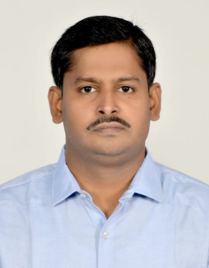

About
Academic background, professional experience, and research focus

Dr. Ayas Kanta Swain
Assistant Professor Grade‑I
Department of Electronics and Communication Engineering
National Institute of Technology Rourkela
Full Name
Dr. Ayas Kanta Swain
DesignationAssistant Professor Grade‑I
DepartmentElectronics and Communication Engineering
InstituteNational Institute of Technology Rourkela
OfficeRoom EC‑112, ECE Department
Email
Phone0661‑246‑2458
Official Page
Education
- Ph.D. (2023) — VLSI Design and Secure Architecture for Embedded System, NIT Rourkela
- M.Tech (Research) (2009) — VLSI Design and Embedded System, NIT Rourkela
- B.E (2001) — Electrical Engineering, IGIT Sarang (Utkal University)
Professional Experience
- Assistant Professor Grade‑I — NIT Rourkela (Current Position)
- Extensive Expertise — VLSI design, embedded systems, and hardware security
- Research Leadership — Principal and co-investigator for multiple sponsored projects
- Academic Supervision — Mentor for Ph.D. and M.Tech students
- Academic Service — Coordinator for workshops, short-term courses, and conferences
Research Focus Areas
VLSI Design
FPGA/ASIC
Embedded Systems
Industrial IoT
Hardware Security
Cryptography
Lightweight Cryptography
Image Encryption
Trusted Platform
System on Chip
Network on Chip
Functional Safety
Professional Memberships
- IEEE Member (2011‑Present) — Active participation in conferences and workshops
- Technical Reviewer — IEEE journals and conferences in hardware security and VLSI design
- Conference Organization — Coordinator for multiple IEEE conferences at NIT Rourkela
Quick Contact
For research collaboration, student supervision, or other inquiries:
Email: swaina@nitrkl.ac.in
Phone: 0661‑246‑2458
Office: EC‑112, ECE Department, NIT Rourkela
Campus: Rourkela, Odisha 769008
Email: swaina@nitrkl.ac.in
Phone: 0661‑246‑2458
Office: EC‑112, ECE Department, NIT Rourkela
Campus: Rourkela, Odisha 769008
Details align with the NITR faculty page. [Source]